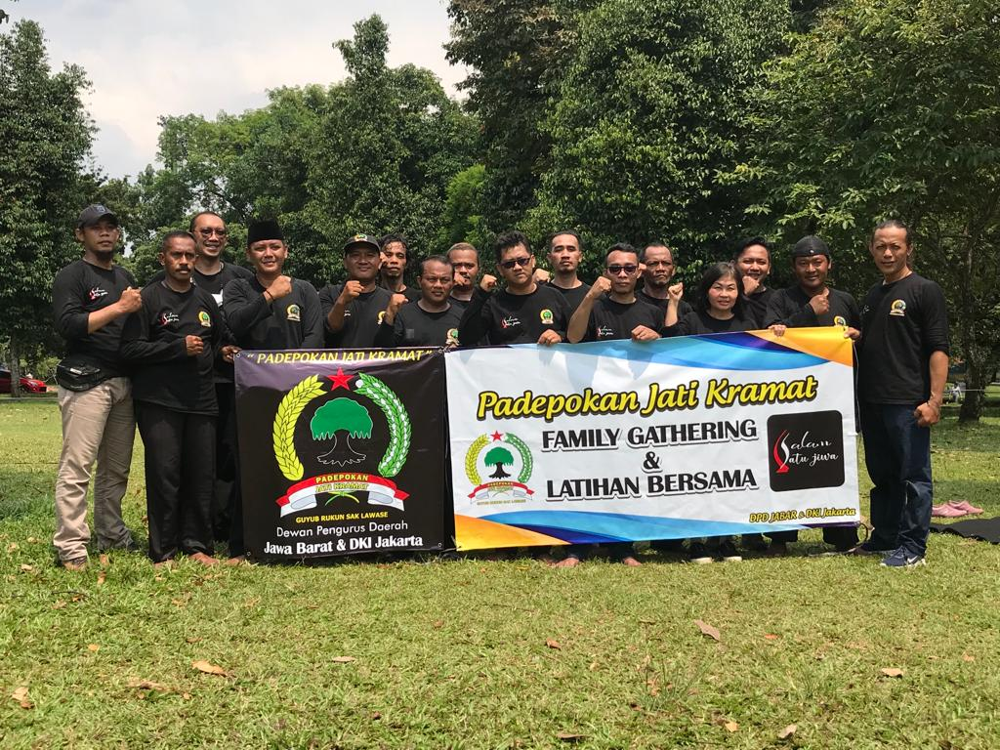

Organisasi ini terbentuk pada tanggal 28 Februari 2019. Didirikan Oleh Bpk Edi Prasetyo yang sampai saat ini menjabat sebagai Ketua Umum dan Guru Besar dari Padepokan Jati Kramat.
Hingga kini PJK sudah tersebar di hampir tiap daerah di Indonesia.
Dewan Pimpinan Pusat

DPD Magetan
DPD Jawa Barat

DPD Jawa Barat

DPD Kaltim